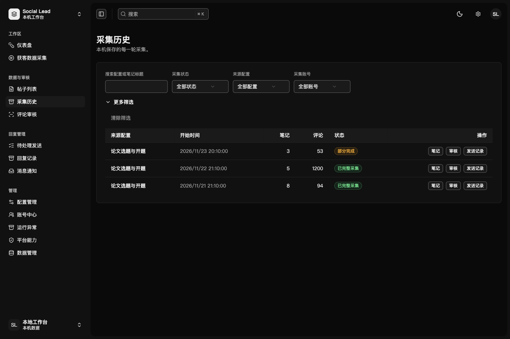

发送权在人
匹配不等于发送。每条判定都带分数、上下文与模型证据，你可以改判、恢复或标记不符合。
01 / 原则
它把“找需求”和“发消息”拆成两件事。模型只负责把可疑的评论挑出来，发送仍要经过你的确认。
匹配不等于发送。每条判定都带分数、上下文与模型证据，你可以改判、恢复或标记不符合。
采集覆盖、审核判断、发送授权与平台回执写进同一份本机记录，失败和未知不被写成成功。
发送前需要授权；结果未知时只读核对，确认之前不重发，确认之后才显示已发送。
02 / 流程
不是一键群发。采集、审核、发送、记录各自有明确状态；失败、部分完成和未知结果都不会被写成成功。

01 / COLLECT
按关键词组拉取笔记与评论。单帖重读只更新采集与审核，不派生自动发送。
02 / REVIEW
模型按匹配方案逐条打分；同一作者任一评论匹配，整组标为符合。你可以改判、恢复或标记不符合。
03 / DISPATCH
评论回复和私信首联使用各自模板池；同一人同通道只做一次首联，日额度、去重与风险保护始终生效。

04 / RECORD
发送授权、平台回执与最终状态写进回复记录。未确认的结果保持未知，不显示成已发送。
03 / 审核
审核页不是聊天窗口，是一张可以逐条改判的表。模型只负责把可疑评论挑出来，发送仍要经过你的确认，或你明确开启的自动规则。
“开题报告的章节顺序有推荐吗？”
示例数据 · 不是真实评论
每条判定都带分数、上下文与模型证据，不把“像客户”当成结论。
同一作者任意一条评论匹配，整组标为符合；避免同一个人被反复打扰。
人工决定覆盖模型判断，原始结果仍保留；后续入队按你的决定执行。
04 / 数据
没有账号服务器，也不需要 Docker、PostgreSQL 或 Redis。业务数据是一份本机 SQLite 文件；模型 Key 与平台 Cookie 单独加密保存。
能备份，也能删干净。
采集、审核、发送、收件与回复记录都落在同一个数据目录。备份、迁移或删除都以该目录为准；卸载应用不会删除业务数据。
模型能力不是本机模型：当你执行评论匹配时，评论内容会直接发送给你配置的模型服务商，受其条款与计费约束。
~/Library/Application Support/SocialLeadDesktopmacOS%LOCALAPPDATA%\SocialLeadDesktopWindowsAES-256-GCM · 本机硬件标识派生密钥独立密文文件，不进入业务数据库无仓库与安装包不包含真实账号、Cookie、Key 或客户数据采集、审核、发送、收件记录都在本机；没有云端同步，也没有需要注册的产品账号。
发送前需要授权；结果未知时只读核对，确认之前不重发，确认之后才显示已发送。
数据目录可直接备份、迁移或删除；不需要导出到另一套服务才能拿回自己的记录。
05 / 下载
两个安装包都内置浏览器、平台组件与原生监督器，不需要另装 Node.js、Go 或浏览器。下载后请先核对 SHA-256。
Social-Lead-Desktop-0.1.0-mac-arm64.dmg
下载 dmgGitHub Releases ↗bab04aaf6057eaecad51d132ec42bccdf8cb54812d26fcf5802910b32c0e49baSocial-Lead-Desktop-0.1.0-win-x64.exe
下载 exeGitHub Releases ↗286716bd67857d197226f50974fdf15b98e55f584c0e921ba5bb5453286e6b40把 Social Lead Desktop.app 拖入“应用程序”后再启动，不要直接在只读 DMG 卷内运行。应用未签名，首次启动请在 Finder 中右键应用 →“打开”，或执行：
xattr -dr com.apple.quarantine "/Applications/Social Lead Desktop.app"SmartScreen 提示“Windows 已保护你的电脑”时，选择“更多信息 → 仍要运行”。安装到当前用户目录；卸载不删除业务数据。
Windows 包在 Windows 11 ARM64 虚拟机内构建、自检并安装；尚未在 Windows 11 x64 真机验证。
核验下载 macOS 执行 shasum -a 256 文件名；Windows 执行 certutil -hashfile 文件名 SHA256。结果应与上方一致。
06 / 边界
这是 0.1.0 预览版。以下不是“以后再说”的脚注，而是当前版本真实的能力边界。
本机目前 0 条收件记录。界面与记录流程已经实现，但没有在真实账号上完成评论通知与私信会话的验收。不要把“收到回复”当作已证明的能力。
安装包在 Windows 11 ARM64 虚拟机内构建、自检并安装；尚未在 x64 真机、默认用户路径升级/卸载和陌生机器 SmartScreen 上验证。
macOS 未使用 Developer ID 签名与公证；Windows 未做代码签名。首次打开需要手动放行，macOS 需在系统设置中允许。
采集与发送依赖平台页面结构。平台改版可能导致采集中断或发送失败，需要更新随包组件。
自动发送需要账号、模板、日额度与开关同时满足；私信自动回复不在当前范围。发送前仍可人工复核。
项目以 PolyForm Noncommercial 1.0.0 发布：允许个人使用、研究、试验与爱好者项目；不允许商业用途。商业使用需要单独授权。